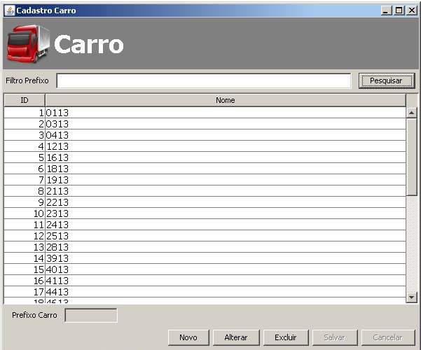

|
Cadastro Carro |
|
|
|
Iniciaremos o cadastro de Carro.
A tela abaixo cadastra o carro, o cadastro é simples basta clicar no botão novo e digitar o prefixo do carro e depois clicar em salvar. O cadastro de carro ainda é mais simples que o Monitor

O carro não poderar ser excluido caso ele possua registro de video pois a um relacionamento
entre as tabelas Registrar Video e Carro ocasionando um erro na exclusão.
O sistema não aceita cadastrar dois carros iguais.
O ID do Carro é cadastrada automaticamente no banco de dados.